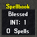
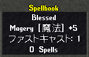
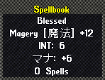

spellbook
spellbook
 Necromancer spellbook [霊媒の書]
Necromancer spellbook [霊媒の書]
 Mysticism spellbook [神秘の呪文書]
Mysticism spellbook [神秘の呪文書]
| 魔法関連スキル | 80〜89.9 | 90〜99.9 | 100〜120 |
| スキル系 | 1〜3 | 4〜7 | 9〜12 |
| ファストキャスト | 1 | 1 | 1 |
| キャストリカバリ | 1 | 1 | 1〜2 |
| 魔法ダメージ | 1〜2 | 3〜6 | 7〜9 |
| ステータス | 1 | 2〜4 | 4〜6 |
| マナ回復 | 1 | 1 | 1 |
| マナコスト | -1 | -2〜-4 | -4〜-6 |
| 秘薬コスト | -1〜-4 | -6〜-10 | -12〜-16 |
| 特効 | Runic武器作成などと同様、 妖精族以外は出現可能性あり 上位特効は全特効中の2％程度 |
||
| 最大プロパティ数 | 1 | 2 | 3 |
| 魔法関連スキル | 80〜89.9 | 90〜99.9 | 100〜109.9 | 110〜119.9 | 120 |
| プロパティ数＝0 | 1339 (67.0%) |
1173 (58.6%) |
1611 (53.7%) |
1409 (47.0%) |
1300 (43.3%) |
| プロパティ数＝1 | 661 (33.0%) |
761 (38.1%) |
1173 (39.1%) |
1255 (41.8%) |
1260 (42.0%) |
| プロパティ数＝2 | ― | 66 (3.3%) |
206 (6.9%) |
312 (10.4%) |
403 (13.4%) |
| プロパティ数＝3 | ― | ― | 10 (0.3%) |
24 (0.8%) |
37 (1.2%) |
| 合計 | 2000 | 2000 | 3000 | 3000 | 3000 |
| 1冊あたり 平均プロパティ数 |
0.33 | 0.45 | 0.54 | 0.65 | 0.73 |
| 上位特効Spellbookに 必要なScr.数[平均] |
24500 | 18000 | 15000 | 12500 | 11000 |
| 
左側から、スキル80、90、100以上で作成されたSpellbookのプロパティ(一例)です。 | |||||
| 秘薬コスト | 強度 | 12 | 13 | 14 | 15 | 16 |
| 出現回数 | 73 | 81 | 71 | 69 | 17 | |
| スキル系 | 強度 | 9 | 10 | 11 | 12 | ― |
| 出現回数 | 371 | 434 | 397 | 62 | ― | |
| 魔法ダメージ | 強度 | 7 | 8 | 9 | ― | ― |
| 出現回数 | 85 | 124 | 95 | ― | ― | |
| ステータス マナコスト |
強度 | 4 | 5 | 6 | ― | ― |
| 出現回数 | 87 | 564 | 281 | ― | ― | |
| キャストリカバリ | 強度 | 1 | 2 | ― | ― | ― |
| 出現回数 | 72 | 214 | ― | ― | ― |
| 特効効果の種類 | 出現回数 | 特効効果の種類 | 出現回数 |
| 爬虫類 | 1 | エレメンタル族 | 2 |
| ドラゴン | 23 | アースエレメンタル | 17 |
| スネーク | 12 | エアエレメンタル | 19 |
| リザードマン | 28 | ウォーターエレメンタル | 20 |
| オフィディアン | 17 | ファイアエレメンタル | 13 |
| 鋏角類(旧昆虫類) | 3 | スノーエレメンタル | 15 |
| スパイダー | 22 | ポイズンエレメンタル | 20 |
| スコーピオン | 18 | ブラッドエレメンタル | 18 |
| テラサン | 21 | 亜人種 | 2 |
| 悪魔族 | 0 | オーガ | 20 |
| ガーゴイル | 26 | トロル | 16 |
| アンデッド族 | 0 | オーク | 21 |
| 合計354（上位[レア]特効8） | |||
| Mageryスキル | 100〜109.9 | 110〜119.9 | 120 |
| スキル系 | 1〜3 | 4〜7 | 9〜12 |
| ファストキャスト | 1 | 1 | 1 |
| キャストリカバリ | 1 | 1 | 1〜2 |
| 魔法ダメージ | 1〜2 | 3〜6 | 7〜9 |
| ステータス | 1 | 2〜4 | 4〜6 |
| 最大プロパティ数 | 1 | 2 | 3 |
| Mageryスキル | 100〜109.9 | 110〜119.9 | 120 |
| プロパティ数＝0 | 483 | 425 | 617 |
| プロパティ数＝1 | 117 | 167 | 344 |
| プロパティ数＝2 | ― | 8 | 37 |
| プロパティ数＝3 | ― | ― | 2 |
| 合計 | 600 | 600 | 1000 |